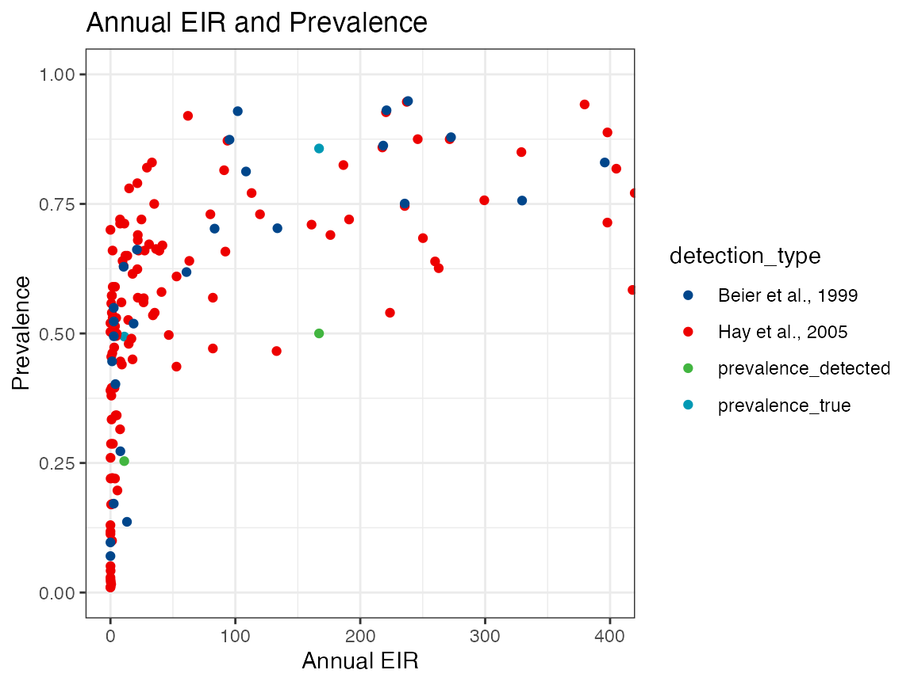
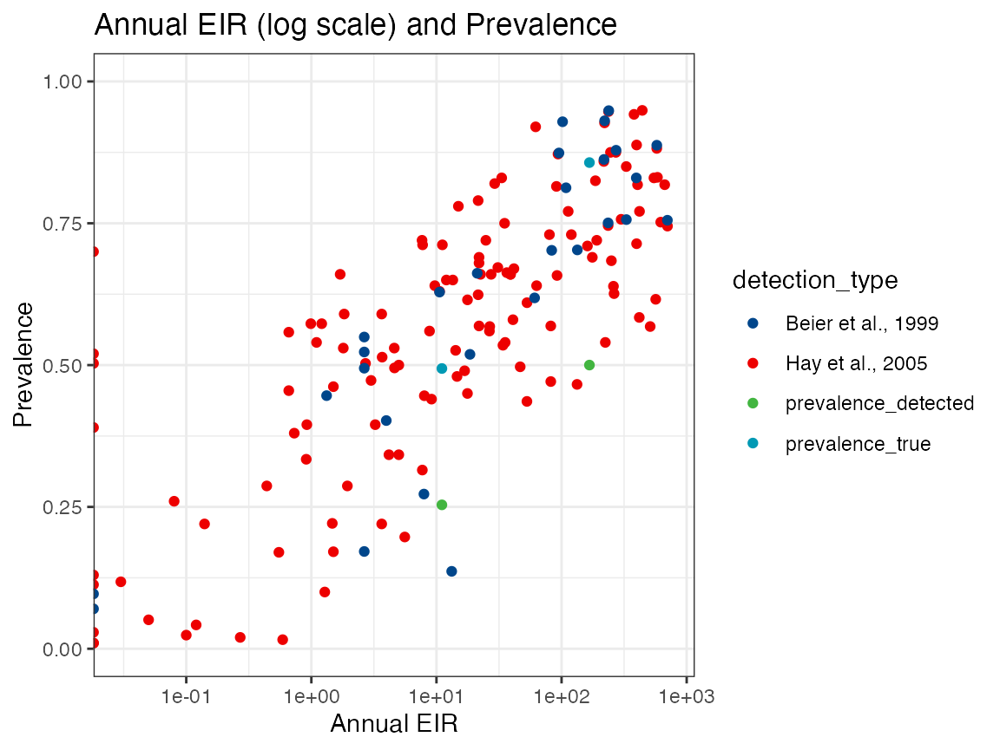

vignettes/comparing_to_data.Rmd
comparing_to_data.RmdIt is often helpful to check model outputs are consistent with emprirical data and sensible. In this package we provide several datasets and examples of SIMPLEGEN model outputs compared to data to check that key epidemiological relationships are represented consistent with empirical data and data generated from other models.
In order to compare annual EIR to parasite prevalence , we must generate annual EIR estimates, true prevalence estimates and the expected detected prevalence at a given sampling time. In this example use an expectation for detectibility based on the sum of the probability of detection accross all individuals, but future iterations of the function could be altered to generate the estimated prevalence and bootstrapped confidence intervals by carrying out bernoulli draws based on the mean detectability.
First we run SIMPLEGEN for a range of EIRs by changing the mosquito population size:
# vector of mosquito population sizes
m_pop <- c(seq(1e3, 9e3, 1e3), seq(1e4, 9e4, 1e4), 1e5, 2e5)
m_pop <- c(1e4, 1e5)
# run simulation and store results
dat <- list()
list_proj <- list()
for (i in seq_along(m_pop)) {
myproj <- simplegen_project() %>%
define_epi_params(seed_infections = 100,
H = 1e3,
M = m_pop[i],
detectability_microscopy_chronic = 0.45,
detectability_PCR_chronic = 0.95) %>%
sim_epi(max_time = 365*10)
dat[[i]] <- myproj$epi_output$daily_values
list_proj[[i]] <- myproj
}Then we use the inbuilt function retrieve_prev to retrieve the true prevalence and estimated detected prevalence from the simulation. We estimate prevalence on a given sampling day and define the type of diagnostic used (PCR or microscopy) and case detection (active or passive).
Expected prevalence is calculated by using the sum of the indidvidual probabilities of detection on a given day (A_detectable_microscopy, C_detectable_microscopy,A_detectable_PCR,C_detectable_PCR), divided by the human population size. For example, if there are 100 cases and P(detection by PCR) for all acute and chronic cases = 0.9,and H=1000, then true prevalence = 100/1000 = 0.1, and expected detected prevalence by PCR is 0.9*100/1000 = 0.09.
We then apply this to the different simulated datasets to create a table of annual EIR and prevalence estimates.
EIRprev <- t(sapply(dat, FUN = retrieve_prev,
case_detection = "Active", diagnosis = "Microscopy",
sampling_time = 3000))
head(EIRprev)FALSE annual_EIR prevalence_true prevalence_detected
FALSE [1,] 11.0505 0.494 0.25365
FALSE [2,] 167.0094 0.857 0.50005Then we can plot on a linear scale using the inbuilt plot_EIR_prevalence function:
plot_EIR_prevalence(data = EIRprev,scale_x = "linear")
Next we can plot on a log scale:
plot_EIR_prevalence(EIRprev,scale_x = "log")